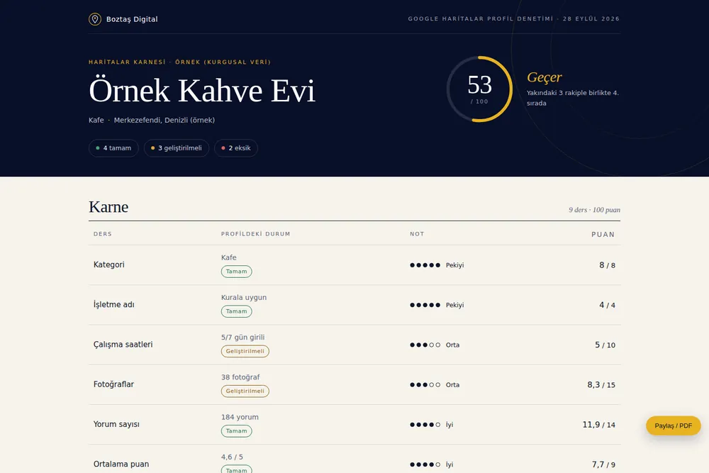
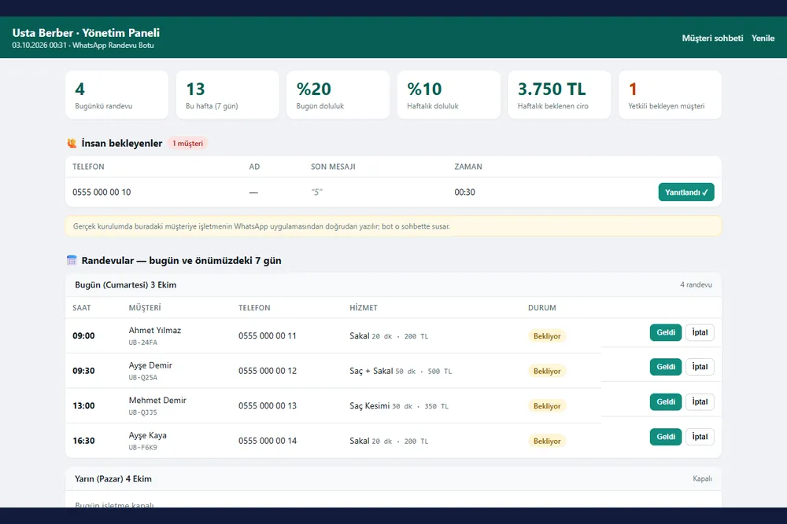
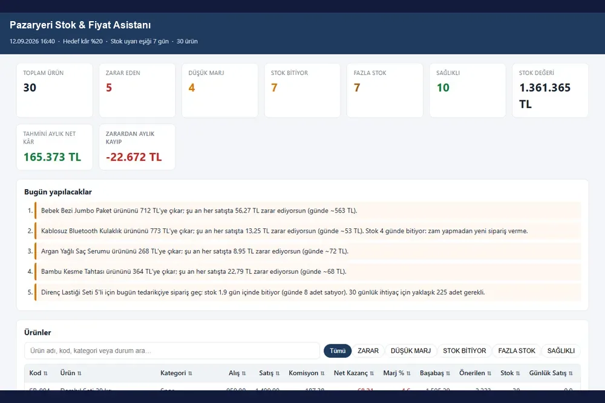
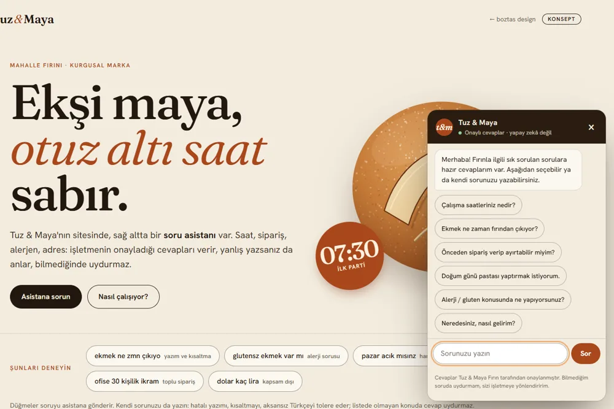

konsept
Haritalar karnesi
Bir işletmenin Google Haritalar profilini rakipleriyle yan yana okuyup puanlı karne çıkarır. Örnek rapor, kurgusal veri.
- Yerel SEO
- HTML
- PDF rapor
Tekrarlayan işi programa devretmek: stok, fiyat, randevu, rapor. Python ve web teknolojileriyle, ihtiyaca göre.
06 iş
Bir işletmenin Google Haritalar profilini rakipleriyle yan yana okuyup puanlı karne çıkarır. Örnek rapor, kurgusal veri.

Müşteri numara yazarak randevu alır; işletme günlük programı yönetim panelinden görür. Kurgusal berber üzerinde demo.
Bilgisayarı ve telefonu sesle yöneten kişisel yapay zekâ asistanı.

Kodda yalnız tek yöne yanlış çıkan hataları arayan, bağımlılıksız bir araç. Her kural, aradığı hatayı kendisi üreterek kanıtlanır.

Ürün başına net kazancı hesaplayıp zarar edenleri ve biten stokları günlük yapılacaklar listesine çevirir. Örnek veriyle.

Kurgusal bir mahalle fırınının sitesinde sağ altta duran sohbet kutusu: saat, sipariş, alerjen, adres gibi sık soruları işletmenin onayladığı cevaplarla yanıtlar, yanlış yazımı ve kısaltmayı anlar, bilmediğinde uydurmak yerine WhatsApp'a yönlendirir. Tarayıcıda denenebilir; sunucusuz ve yapay zekâsızdır. Yapay zekâlı sürüm yalnız kısa bir konsept animasyonuyla anlatılır. Örnek çalışma.
Durum etiketleri gerçeği söyler: konsept çalışmalardaki markalar ve veriler kurgusaldır; gerçek işletme adı, fiyat ya da müşteri bilgisi gösterilmez.
Kısaca anlatın, size özel bir önizlemeyle döneyim.